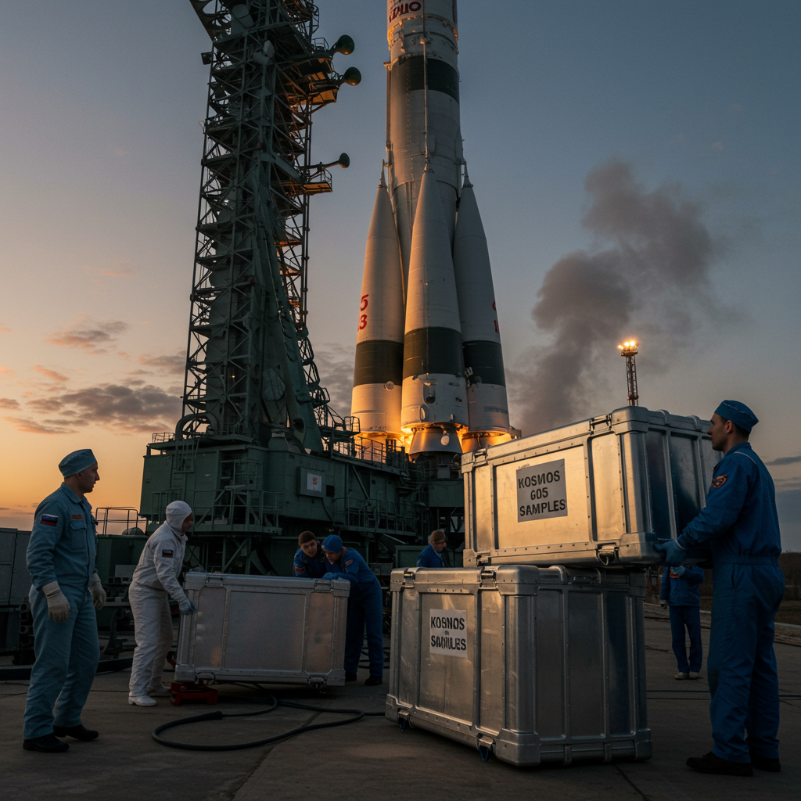

Kosmos 605

Datos Técnicos
- Nombre: Kosmos 605
- Fecha de lanzamiento: 30 de octubre de 1973
- Vehículo de lanzamiento: Soyuz-U
- Tipo de satélite: Bion 1 (biológico)
- Duración de la misión: 21 días
- Recuperación: Cápsula recuperada exitosamente
Objetivo de la Misión
Kosmos 605, el primer satélite de la serie **Bion**, marcó el inicio de los experimentos biológicos a largo plazo en órbita terrestre. El propósito fue observar cómo organismos vivos reaccionaban a exposiciones prolongadas en condiciones de microgravedad.
Carga Científica
La cápsula transportó una variedad de organismos incluyendo:
- Ranas Xenopus laevis
- Bacterias y algas
- Huevos de peces
- Semillas y musgos
Impacto Histórico
Como primera misión del programa Bion, Kosmos 605 demostró la viabilidad de realizar investigaciones biológicas complejas en el espacio. Sus resultados contribuyeron a sentar las bases de la medicina espacial y el estudio de los ciclos celulares en condiciones extraterrestres.
← Regresar al Archivo X